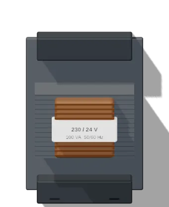
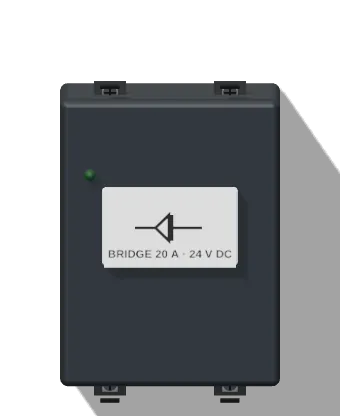
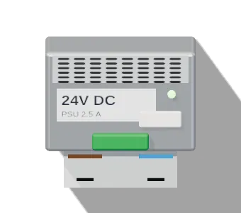

أساسيات الكهرباء · الدرس 10 من 13
لوحات التحكم والشواحن لا تعمل على 220V مباشرة. المحوّل يخفض الجهد (مثلًا إلى 24V أو 12V)، ومصدر التغذية (Power Supply) يحوّل الـ AC إلى DC ثابت. ستفهم الاثنين، وتقيسهما، وتعرف أعطالهما.
المحوّل ملفان على قلب حديدي واحد. الملف الابتدائي يدخله 220V فيولّد مجالًا مغناطيسيًّا، وهذا المجال يُنتج جهدًا في الملف الثانوي بقدر عدد لفّاته.

مثال: ابتدائي 1100 لفّة وثانوي 120 لفّة: 220 × 120 ÷ 1100 = 24V.
المحوّل يعمل على AC فقط. على DC يحترق الابتدائي.
غيّر عدد اللفّات وشاهد كيف يتغيّر جهد الخرج.
القدرة الداخلة إلى المحوّل هي الخارجة منه. فإذا انخفض الجهد زاد التيار. محوّل 100VA: تياره في جهة 230V يساوي 100 ÷ 230 = 0.43A، وفي جهة 24V يساوي 100 ÷ 24 = 4.2A.
لذلك يكون فيوز جهة 24V نحو 4A. والثانوي معزول عن الشبكة، وهذا ما يجعله أكثر أمانًا.
وهو مفصول: قِس مقاومة كل ملف، والملف الأعلى مقاومة هو جهة الجهد العالي. واختبر العزل: بين الابتدائي والثانوي والقلب يجب أن يقرأ OL.
وهو يعمل: قِس جهد الخرج على وضع V~.
على 4 مراحل: يدخل 220V AC إلى محوّل يخفض الجهد، ثم توحيد يجعل التيار في اتجاه واحد، ثم تنعيم يزيل التموّج، فيخرج 24V DC.


مصدر تغذية اللوحات من نوع Switching: صغير وخفيف ويعمل من 100 إلى 240V. وأطرافه: L N PE لدخل 220V، و +V −V لخرج 24V DC، ومسمار V.ADJ يضبط الخرج من 22 إلى 28V، ومصباح DC OK أخضر حين يكون الخرج سليمًا.
مصدر التغذية يُقاس وهو يعمل: الدخل V~ بين L و N، والخرج V⎓ بين +V و −V.
إذا كان الدخل 0V: العطل قبله، فافحص القاطع أو الفيوز. وإذا كان الدخل 220V والخرج 0V: افصل الحمل وقِس ثانية، وإذا بقي صفرًا فغيّر مصدر التغذية.
إذا كان الخرج منخفضًا (18V مثلًا): اضبط V.ADJ أو قلّل الحمل. وإذا كان الخرج 24V فمصدر التغذية سليم، وابحث في الحمل.
محوّلات التحكم بحسب IEC 61558، ومصدر تغذية 24V DC في اللوحات يكون عادة SELV/PELV. القيم تُحسب من دائرة حقيقية داخل الصفحة. تقدّمك يُحفظ في حسابك.
© 2026 LearnElectricals. كل الحقوق محفوظة. الموقع غير تابع لأي من الشركات المذكورة (مثل Siemens و Allen-Bradley و Delta و Schneider وغيرها)، والأسماء والعلامات التجارية ملك لأصحابها، ومستخدمة لشرح الأجهزة فقط.